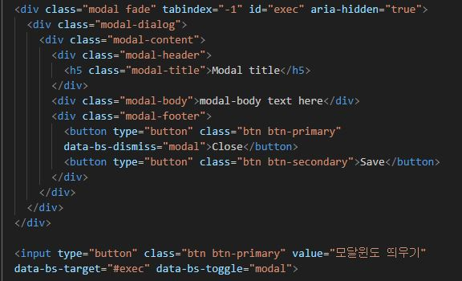

• 사용자 인터페이스(UI)디자인 개념에서 자식 윈도에서 부모 윈도우로 돌아가기 전 사용자의 상호동작을 요구하는 창을 말함
• 모달 윈도우는 부모창을 배경으로 어둡게 하고, 자식요소가 화면의 가운데 중앙에 배치하도록 하며, 오르쪽 상단(이미지 배너 아래)에 '닫기'버튼을 만들어서 닫을 수 있도록 함
• .modal / .modal-dialog / .modal-content / .modal-header & .modal-body & .modal-footer
• 닫기 버튼에 data-bs-dismiss="modal" 속성 추가
• 정적 백드록 : 백드롭을 static으로 설정하면 배경을 클릭해도 모달이 닫히지 않음